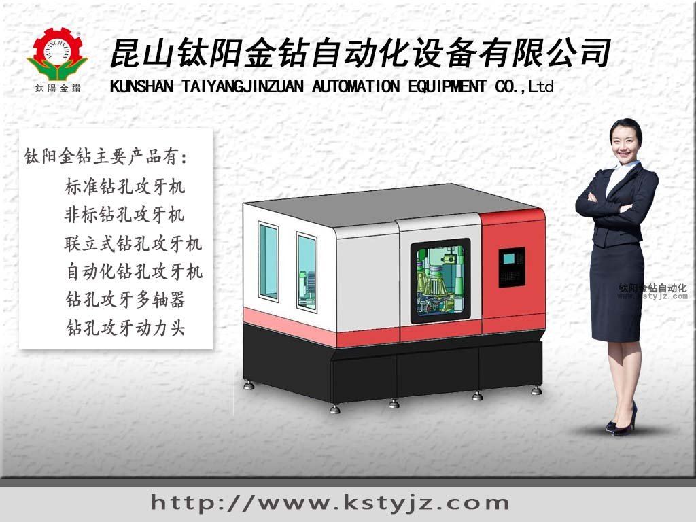
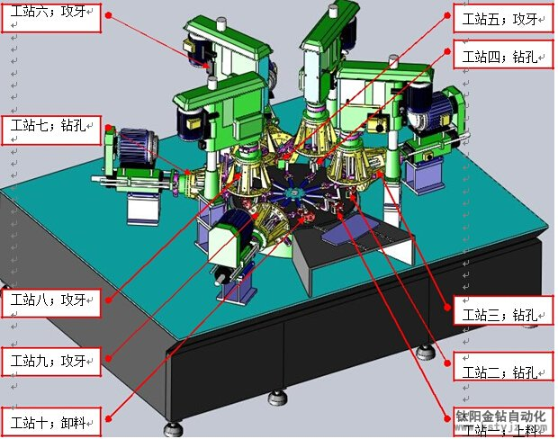
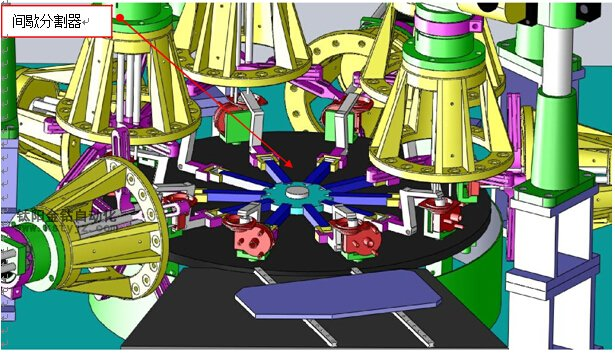

江蘇加工中心蘇州攻牙機加工中心廠家

大型機械配件加工廠伺服攻牙機加工中心介紹：
本文又昆山太陽金磚機械工程師匡工為您呈現昆山鈦陽金鑽自動化設備在解決客戶多孔多面多攻位鑽孔攻牙機加工方案的實例機械，從而為您解析多軸多攻位加工中心是如何自動化操作協調多種加工方式與步驟的。並為您介紹伺服加工中心的電器元件的選擇以及機械配件在整台設備中所起到的作用。
伺服加工中心能同時加工多個攻位，多種加工方式極大的增加了加工效率，節約了加工制件所用人力。
伺服攻牙鑽孔多攻位加工中心電氣化系統設置：
其主要功能在於協調各個攻位以及加工轉盤機的位置調整的精度與運動形成。鈦陽金鑽伺服攻牙機的電器配件由專業電氣化工程師配置，是真正的代碼程序協調電器元件而不是那些冒牌的簡單電器元件充當的伺服器。鈦陽金鑽自動化電氣化工程師擁有多年的工作經驗，一直從事簡單、和複雜的制動PLC電氣化配置工作。
鈦陽金鑽自動化的伺服加工中心的電氣化元件全部採購進口的西門子與索尼、三星等大品牌電器元件，給予客戶較好的質量保障。其中鏈接線材全部採用國標材料，電器單元佈置合理並且由專業電器工程師設計電器單元控制櫃。合理的佈局和良好的散熱極大的增加了電器元件的工作效率，降低了故障幾率與損壞率。
系統規劃的具體內容包括：明確控制要求，確定系統類型，確定硬件配置要求；選擇PLC的型號、規格，確定I/O模塊的數量與規格，選擇人機界面、伺服驅動器、變頻器、調速裝置等。

硬件設計是在系統規劃與總體設計完成後的技術設計。一般來說，PLC系統硬件設計應包括如下內容;
１控制系統主回路的設計、控制回路的設計、安全電路、PLC輸入/輸出回路等方面的設計；
２控制櫃、操縱台的機械結構設計；
３控制櫃、操縱台的電器元件安裝設計；
４電氣連接設計等。
機械結構設計方面，鈦陽金鑽會根據客戶的需求以及加工工件的具體情況來設計整體的機械結構，以便讓加工流程更順暢加工方式更合理。
設備規格/性能
1 機台尺寸：2800mm(L)X2200mm(W)X1800mm(H)； 2 生產節拍：4∼6PCS/min;
3 電源：AC380V±10％，50HZ，
4 廠務氣源：0.5∼0.7MPa；
5 重量:約 2400Kg;
設備結構/部件
1 設備結構示意圖（見方案圖） 2.設備所採用部件（見方案圖）

相關資訊
- 攻牙機能夠使用的方法是什麼呢？'>攻牙機能夠使用的方法是什麼呢？
- 自動攻牙機沖床和沖孔機的對比'>自動攻牙機沖床和沖孔機的對比
- 解析自動攻牙機機床的發展方向'>解析自動攻牙機機床的發展方向
- 攻牙機和台鑽有什麼區別？'>攻牙機和台鑽有什麼區別？
- 全自動攻牙機如何分析螺紋加工的質量問'>全自動攻牙機如何分析螺紋加工的質量問
- 全自動攻牙機的十大功能特點'>全自動攻牙機的十大功能特點
- 手動攻牙機的性能特點'>手動攻牙機的性能特點
- 全自動玻璃攻牙機有那些特點？'>全自動玻璃攻牙機有那些特點？
- 自動鑽孔機專家講內燃式鑽孔機和電動式'>自動鑽孔機專家講內燃式鑽孔機和電動式
- 江蘇加工中心蘇州攻牙機加工中心廠家


推薦文章
- 影響電動攻牙機性能的
- 何以自動攻牙機可以做
- 攻螺紋前鑽底孔直徑和
- 鑽孔機如何選擇,台式自
- 攻牙油 百 科
- 自動鑽床自動攻牙機離
- SPS-全自動鑽孔倒角攻牙
- 攻牙機原理,多功能機床
- 動力頭基本構造及相關
- 自動攻牙機深孔。小孔